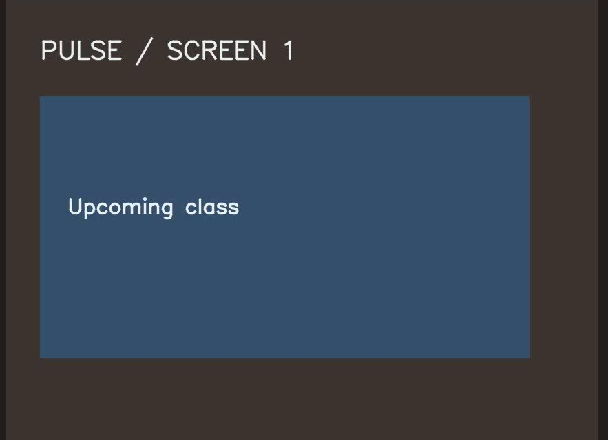
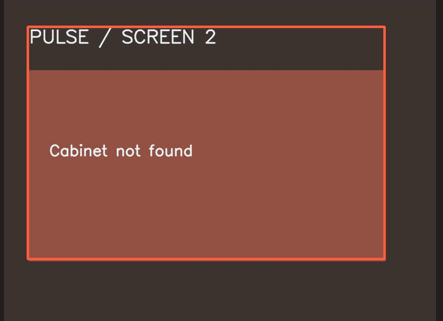
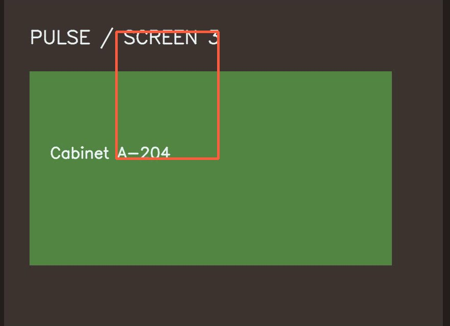
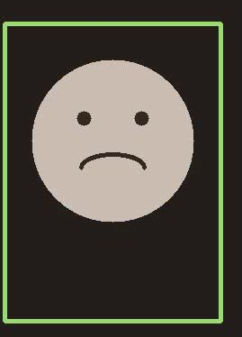
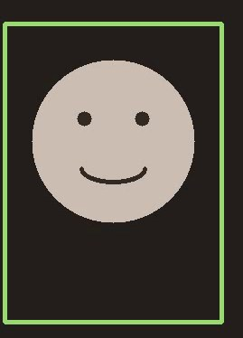

Этап
00:00:00
Проверяет занятие
00:00:04
Ищет кабинет
00:00:08
Находит кабинет
Речь участника
«Я открываю Пульс и сразу вижу ближайшее занятие.»
«Здесь я не понимаю, где найти ссылку на кабинет.»
«Когда ссылка появляется рядом со временем, мне уже спокойно.»
Действие и экран

Открывает главный экран и видит ближайшее занятие.

Переходит к деталям занятия, но не находит кабинет.

Видит кабинет рядом со временем и завершает поиск.
Лицо в моменте

лицо найдено
лицо найдено

лицо найдено
Эмоциональная кривая
Уверенность
Участник говорит, что сразу видит нужную информацию.
уверенность: средняяЗамешательство
Участник прямо говорит, что не понимает, где найти нужное.
уверенность: высокаяОблегчение
Участник связывает новое расположение ссылки со спокойствием.
уверенность: высокаяИнсайты
- Ближайшее занятие считывается без поиска.наблюдение исследователя
- Кабинет и ссылка теряются между деталями занятия.сказал участник
- Связка «время + место» закрывает задачу одним взглядом.наблюдение исследователя
Что изменить
- Сохранить ближайшее занятие главным объектом экрана.вывод исследователя
- Показывать кабинет и ссылку рядом со временем занятия.вывод исследователя
- Проверить решение ещё на нескольких интервью.требует проверки
- Объединить время, кабинет и ссылку в один блок.вывод исследователя